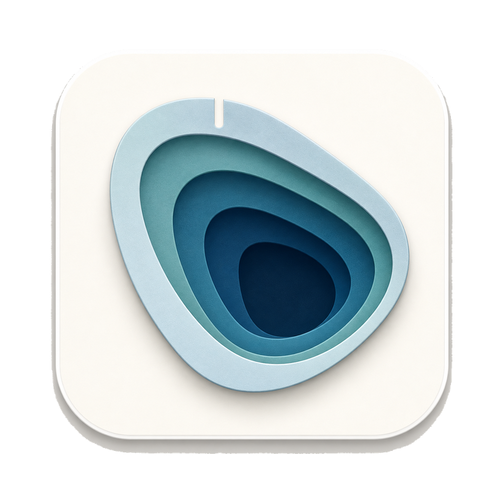

品牌呈现：正式 App 图标 vs 界面 brandBasin（24/26/64px）
审计反例 #1：界面 brandBasin 是五个共用中心的椭圆与一个三角缺口，64px 下仍像同心环，与正式图标（象牙白 squircle 底板、非对称水滴轮廓、有深度的阶地）形状不一致。下方为同一底色上的并排实图对照——形状一致性以并排实图核对，不靠色值命中证明。

正式 App 图标
assets/icon.png · 128px 展示（源 1024）
正式 · 64px
关于页目标尺寸
brandBasin · 64px
当前关于页呈现：同心环感
brandBasin · 26px
页头锚点（候选：移除）
brandBasin · 24px
侧栏字标（候选：保留）
- 保留侧栏品牌位（brandBasin 24px + 9px 字标 + 短刻度）——主窗口唯一品牌位，候选样板即此形态。
- 保留关于页 64px 图标——页内唯一品牌位，正式产品建议直接使用正式位图资产（形状议题归 ISS-105 复审，本卡只定位置与数量）。
- 移除页头 26px 锚点——与侧栏品牌位相邻重复（审计：相邻重复品牌图形）。
- 移除页头 180px 刻度带、每个区块标题前的三根刻度、四卡下装饰横线——刻度母题收敛为：侧栏品牌位、总览主结论等深线、二级选中态短刻度（“少数位置点到为止”）。
字阶（三级主次，禁止全同权重）
审计实测现状：h1=17px、h2=15px、导航=11px，主标题与大量辅助信息层级差距小；DESIGN 合同字阶目标（22–24/28–32/15–16/14/13/12）在产品中未实装到位。候选对齐既有合同，不发明新刻度。
+2.3 GiBdisplay 28px / 680 —— 主结论数字（每页至多一处），等宽
总览h1 22px / 640 —— 页标题（现状 17px 提级）
最近变化h2 15px / 600 —— 区块标题（无刻度前缀）
正文说明一句，承载解释与口径。body 14px / 400
表格数值 13px，等宽右对齐table 13px
辅助口径与脚注 12px；路径等宽 12pxhint 12px（微字标 9px 仅品牌位）
表面层级（L0–L3，嵌套不再套白卡）
审计：内容标签外套一整条白卡、内容本身再套白卡，卡片/标签/嵌套面板普遍依赖边框阴影，同权重白卡叠出“功能面板”观感。候选：每页一张 L1 白卡；L2 用底色块/分隔线；L3 仅浮层。
L1 · 页面主表面（每页至多一张：白卡 + hairline + 弱阴影）
L2 · 区块分组（bg 底块，无边框无阴影；纵向分组用 hairline 分隔线）
一级 / 二级选中态（深色实底全站仅一级）
审计：全局导航、设置分区、内容标签均用同等深色块，所处层级不同视觉重量却接近。候选：一级保留用户认可的深潭墨实底；二级改浅品牌底 + 短刻度；表格行选中用 --sel。
二级 · 分区/内容标签（收敛）
监控
计划与通知
高级与诊断
主次按钮（实心每视口最多一个，归属当前页主任务）
审计：全局“立即扫描”在每页都是最显著实心按钮，当前页面的查询/保存反而较弱；DESIGN 合同明确全局扫描不应压过页面主操作。候选：全局扫描固定为次级描边；实心 36px 主按钮每视口至多一个。
危险/低频保存（如排除列表）用次级描边，不与页主任务争夺实心。
空态三型（等待 / 错误 / 无匹配，不用错误红承载正常等待）
审计：空库与单快照共用“还不能比较”错误容器，不足以承担清楚的首次使用引导；DESIGN 状态合同要求缺失/等待不伪装成失败。候选分型：等待型（bg 块、给下一步）、错误型（浅红、保留上次有效数据说明 + 重试）、无匹配（行内说明，不占独立框）。
等待下一个日期的快照
当前只有 1 个有效快照（9月12日 12:03）。差分需要两个不同日期的快照；同日重扫不会产生新的基线。这里不显示假 0 变化。
最近变化加载失败（HTTP 500）
上次有效数据 9月12日 12:03 仍可查看；失败不代表无变化。
没有匹配“下载”的目录 —— 调整搜索条件；无匹配与读取失败是两种不同情况。
图表（统一规格，先读数后图形）
审计：图表沿用多处各自定义的字号、留白与坐标布局；现状 340px 大图占据首屏，把变化结论挤到首屏之外。候选：次级图统一 150px 高、11px 轴字、3 条弱网格；标题行内给关键读数；缺失日留空；必须有等价表格。